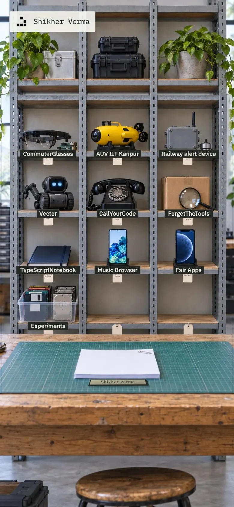
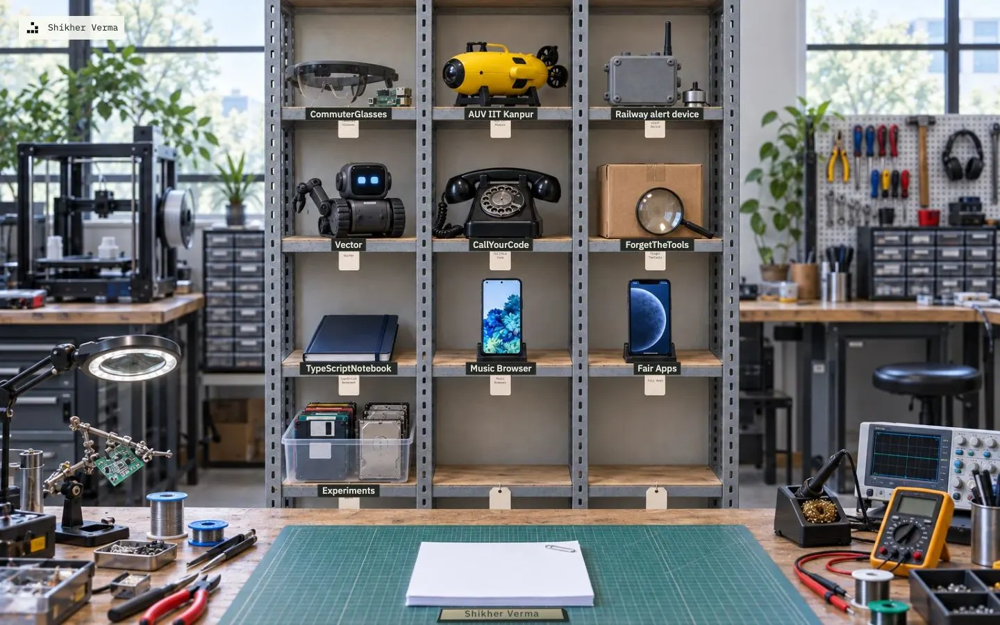

Shikher Verma
Personal site where the project list is a workshop shelf.
A personal site for Shikher Verma, an engineer, where the project index is a photographic steel shelf and each cubby holds an object standing in for one project.
Visit shikherverma.com

Design decisions
- The index is one full-bleed workshop image: a steel shelf with an object per project (an underwater vehicle, a rotary phone for CallYourCode, a magnifier on a box for ForgetTheTools) and a paper tag hanging under each. Two cubbies are left empty with blank tags.
- Labels sit on dark strips along each shelf edge in a bold sans, so names stay readable over a busy photograph.
- The cubbies are real links laid over the image, each reachable by keyboard with a 'Read about ...' label, so the picture works as navigation.
- Clicking a cubby zooms the scene in slightly and hangs a large cream tag on a string over the shelf, with the project name, one line of description, an outbound link and a '<- shelf' button to close it.
- Type: IBM Plex Mono for the identity chip and the tag, which suits the workbench-and-labels theme.
- There is no nav bar. A small identity chip sits top left, and the paper and name plate on the green cutting mat in the foreground lead to the About page.
- Mobile uses a taller version of the scene rather than a crop: an extra top shelf with plants and cases above, the desk and a stool below, with the same three columns of cubbies in the middle.
On a phone
Shikher Verma has a single theme, so there is one set of captures.
The flow, step by step


Further down the page